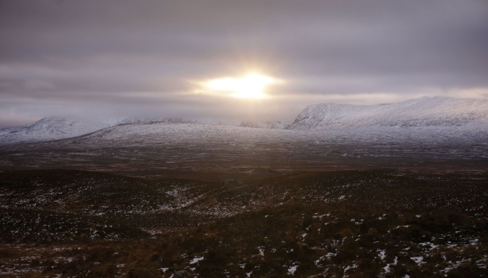
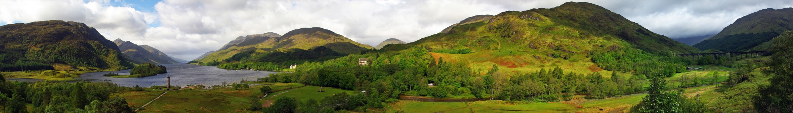
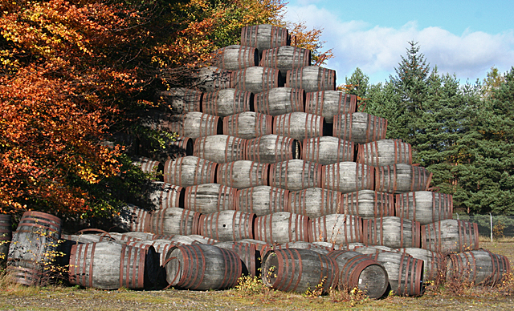
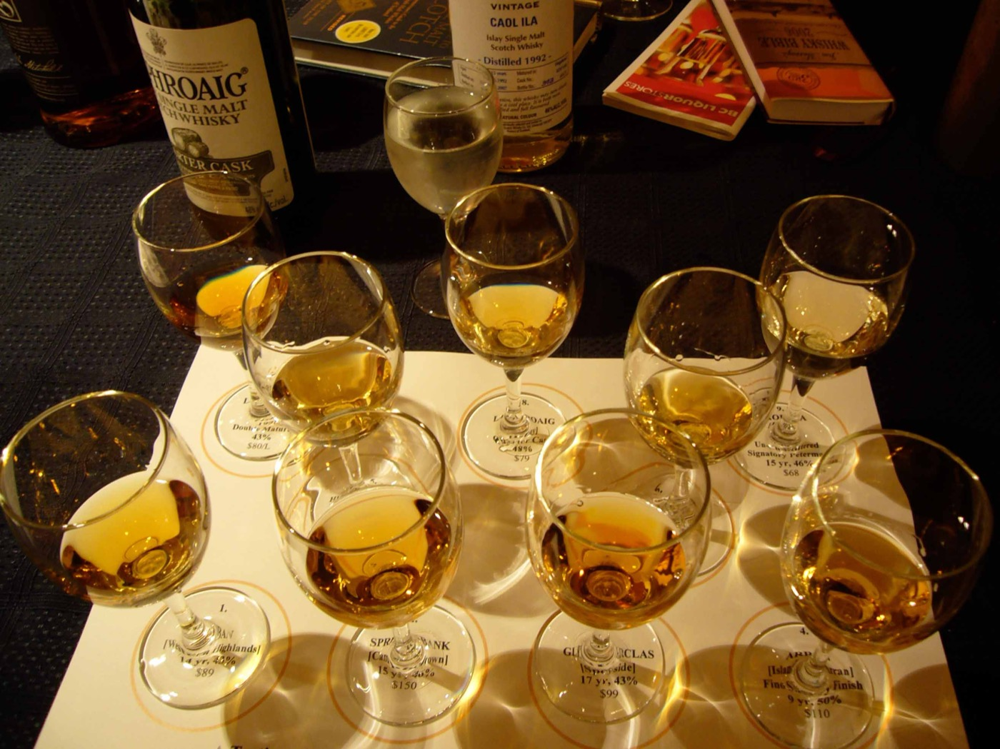
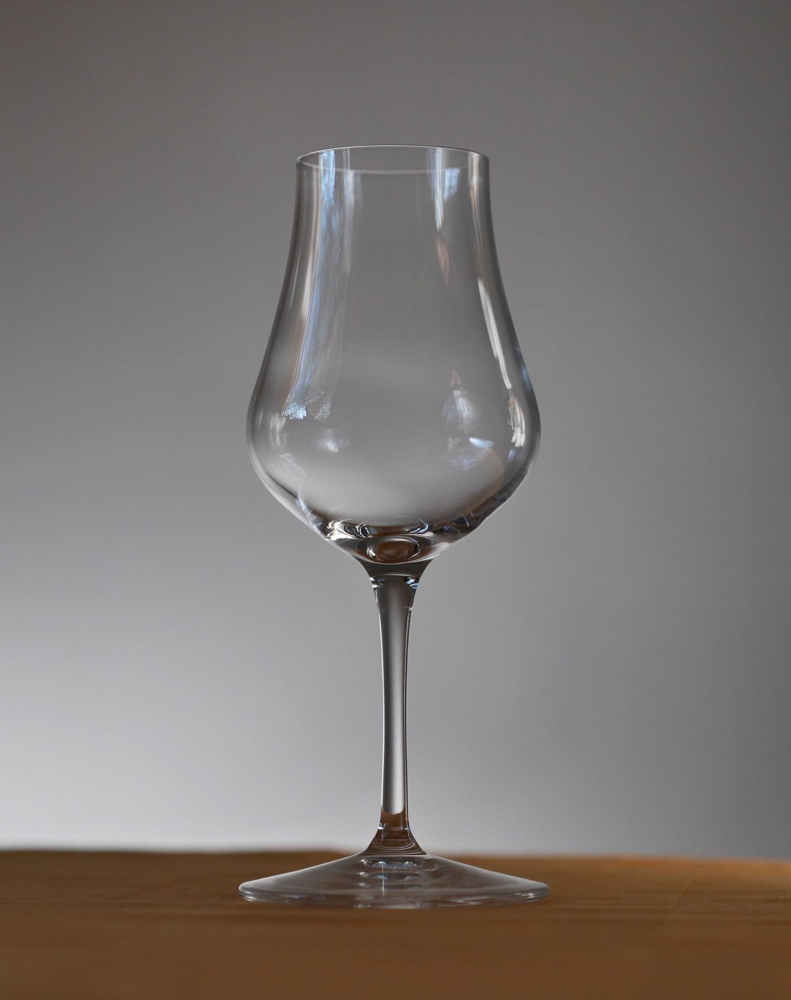

"Where Every Dram Has a Story"
위스키 러버들의 로망, 상상만 하던 완벽한 테이스팅 여정. 현지 운전부터 통역, 예약까지 가이드가 모두 해결해드립니다.
대기 신청하기그 위대한 위스키를 현지에서 마음껏 마시고 싶었던 적 있으신가요? 하지만 막상 떠나려니 현실적인 벽들이 앞을 가로막습니다.
렌트카를 빌리면 운전자 1명은 테이스팅을 전혀 못합니다. 음주운전은 스코틀랜드에서도 엄격히 금지됩니다.
위스키 매니아가 아닌 지인과 긴 여정을 맞추는 것은 현실적으로 너무 어렵습니다.
증류소 간 먼 거리, 막막한 동선 계획
전문 용어가 난무하는 영어 투어의 장벽
Covering all 5 Whisky Regions

일반 여행사에서는 접근하기 힘든 소규모 크래프트 증류소부터, 전 세계 위스키 팬들이 열광하는 성지까지. 수십 번의 답사를 통해 완성된 완벽한 동선을 제공합니다.


당신은 그저 창밖의 하이랜드 풍경을 감상하며, 매 방문마다 주어지는 귀한 테이스팅 잔을 온전히 즐기시면 됩니다. 전 일정 이동은 저희가 책임집니다.
Tour Director
현지 사정에 밝은 위스키 유튜버이자 앰배서더가 직접 여정을 기획하고 인솔합니다. 깊이 있는 지식과 풍부한 경험으로 여러분의 여행을 완벽하게 서포트합니다.
채널명 '위스키성지여행' 운영
스코틀랜드 현지 직접 답사 완료
Kavalan 공식 앰배서더 활동
조주기능사 자격증 및 클래스 다수
| 일반 여행사 | 영어 전문 투어 | 위스키성지여행 | |
|---|---|---|---|
| 위스키 전문성 | |||
| 한국어 가이드 | |||
| 전 일정 운전 해결 | |||
| 5대 생산지 투어 | |||
| 프라이빗 맞춤 |

소규모 프라이빗 투어 특성상 조기 마감될 수 있습니다. 희망하시는 일정을 선택해 주시면 우선적으로 안내해 드립니다.
맞춤 일정 및 기업 단체 문의도 환영합니다.